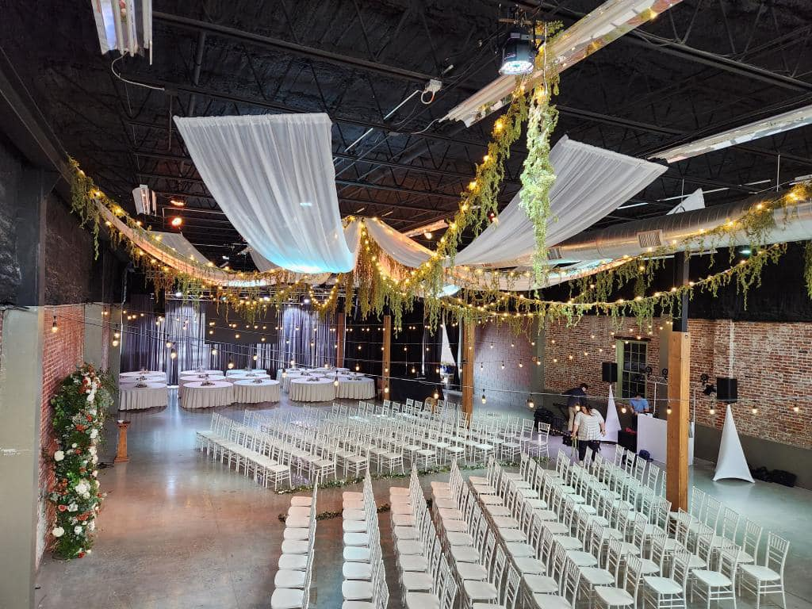
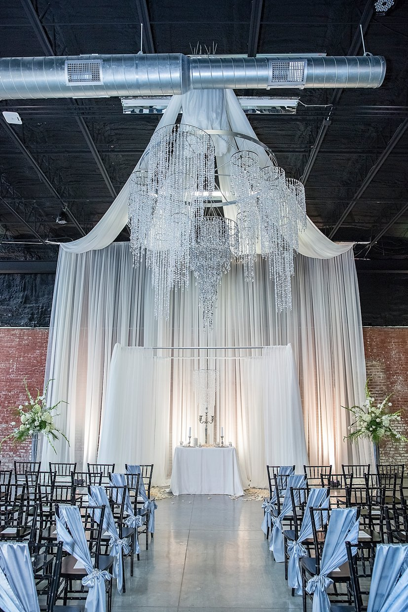
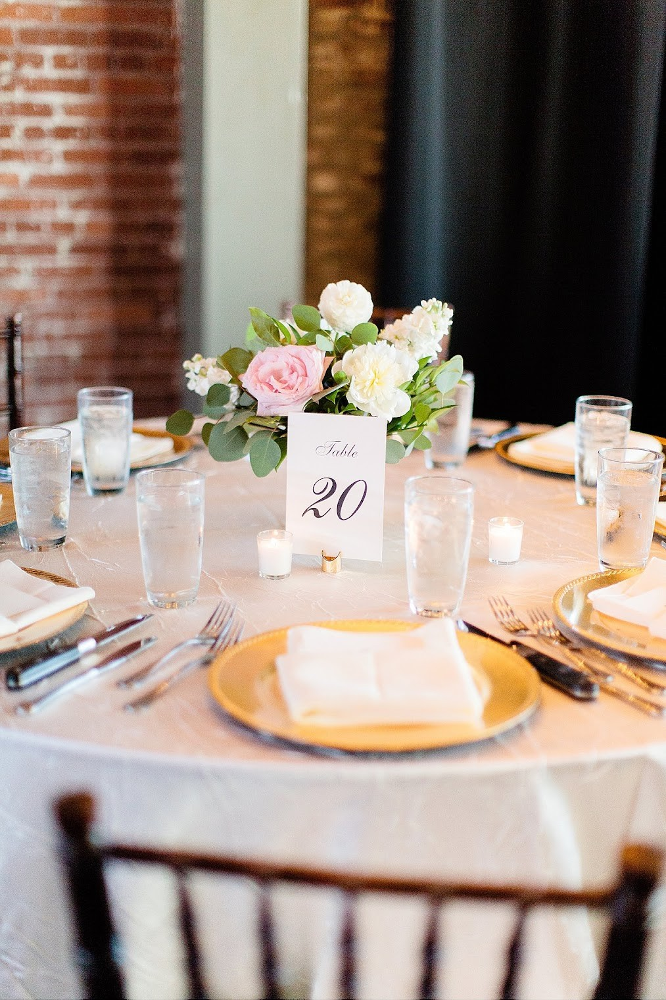
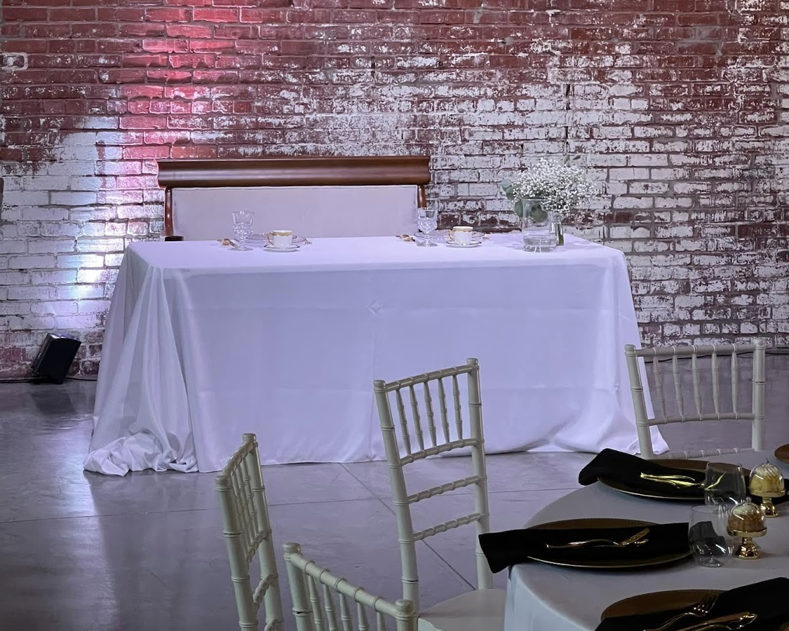

Events at The Old Glass Place
One restored ballroom in downtown Springfield, set for the event you are planning. The venue hosts weddings, receptions, proms, concerts, fundraisers, banquets and meetings in a 1908 and 1914 era building with exposed brick, high ceilings and large windows.
Weddings
The ballroom holds the ceremony and the reception in one room. Rows of white chairs face a draped altar under a crystal chandelier, and the bridal suite gives the wedding party a room of its own. Day-of lighting and draping are handled by the venue.


Receptions
Round tables seat guests under string lights and draped ceilings. The in-house bar serves the room, and the venue handles setup and cleanup so the night ends without a long teardown.

Proms
The stage and the dance floor sit under the venue's lighting and sound, in a room with high ceilings and large windows. The ballroom gives a prom a full evening in one historic space.

Concerts
The ballroom stage carries live music under the venue's lighting and sound, with exposed brick and high ceilings behind the performers and room for the crowd on the floor.
Fundraisers and banquets
A dressed ballroom for a cause or a company table. Vendor coordination and day-of lighting and draping come with the venue, and the in-house bar serves the room.

Meetings
Two event spaces give a meeting a room apart from the ballroom. Lighting and sound are in the room, and the venue handles setup and cleanup.
What comes with the venue
The ballroom covers more than 12,000 square feet, and a second event space sits beside it. The bridal suite, the in-house bar, lighting and sound, setup and cleanup, vendor coordination and day-of lighting and draping are part of the venue.
The building was purchased by the Missouri State University Foundation in 2023 and is managed by 425 Downtown LLC. It remains available to the public.
Call to ask
Questions about a date? Call (417) 501-8035.
Call (417) 501-8035